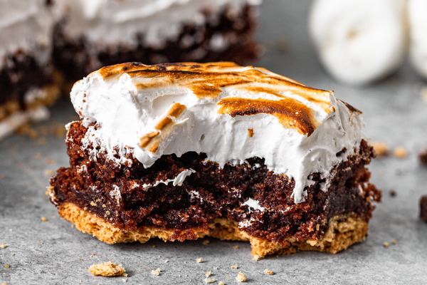

S'mores Brownie Recipe

Description
This is a delicious s'mores brownie restaurant that is perfect for all
ages! So easy to prepare and will have everyone talking!
This recipe has a prep time of 15 minutes and a cook time of 30 minutes,
making the total time 45 minutes. The recipe serves 20 people.
Ingredients
- 1 (21.5 ounce) package brownie mix
- 6 graham crackers
- 1 1/2 cups miniature marshmallows
- 8 (1.5 ounce) bars milk chocolate, coarsely chopped
Steps
- Preheat oven to 350 degrees F (175 degrees C). Prepare brownie mix according to package directions. Spread into a greased 9x13 inch pan.
- In a medium bowl, break graham crackers into 1 inch pieces and toss with miniature marshmallows and milk chocolate. Set s'more mixture aside.
- Bake brownies for 15 minutes in the preheated oven. Remove, and sprinkle the s'more goodies evenly over the top. Bake for an additional 15 to 20 minutes, or until a toothpick inserted in the center comes out clean. Allow brownies to cool before cutting into squares.